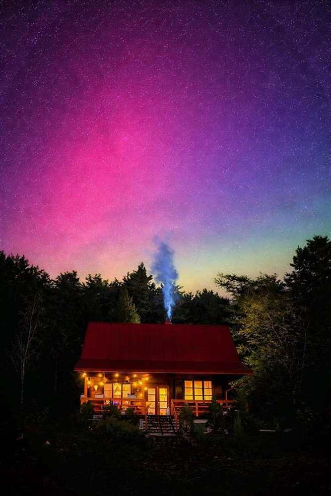
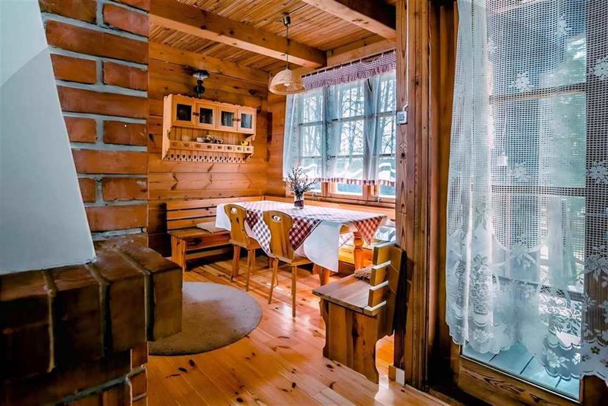
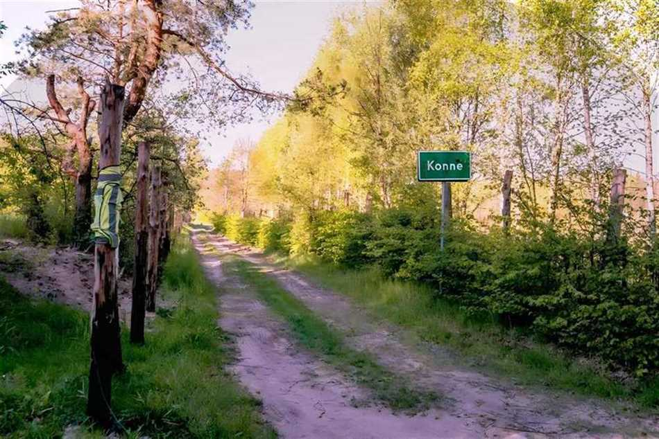

Dom w lesie na wyłączność
Prywatny charakter pobytu wzmacnia poczucie spokoju i odróżnia ofertę od standardowych noclegów w centrum.
Krzemienna Chata łączy wszystko, czego szukają goście wpisujący w Google hasła noclegi Supraśl, dom w lesie i Puszcza Knyszyńska: prywatność, prawdziwy klimat drewna, bliskość natury i szybki dojazd do atrakcji uzdrowiska.

Leśny klimat, drewno, światło, cisza i przestrzeń, które pracują na pierwsze wrażenie już po przyjeździe.
Nie kolejny anonimowy apartament, tylko miejsce z własną historią i atmosferą.
Inspiracją dla nowej strony była analiza obecnej komunikacji obiektu oraz praktyk konkurencji z okolic Supraśla. Najlepiej działają dziś strony, które sprzedają nie sam nocleg, ale konkretny scenariusz pobytu: poranną kawę na tarasie, wieczór przy drewnie, spacer po puszczy i szybki wypad do miasteczka.
Właśnie dlatego treści na tej stronie prowadzą użytkownika od emocji do decyzji: od klimatu i zdjęć, przez udogodnienia, po konkretne odpowiedzi na pytania wpisywane w wyszukiwarkę.

Prywatny charakter pobytu wzmacnia poczucie spokoju i odróżnia ofertę od standardowych noclegów w centrum.
Drewno, ciepłe światło i naturalne materiały budują atmosferę, która zatrzymuje użytkownika na stronie dłużej.
Lokalizacja działa SEO-wo, bo odpowiada na lokalne frazy: „noclegi Supraśl”, „weekend Supraśl” i „atrakcje Supraśl”.
Goście nie kupują tylko domu. Kupują dostęp do lasu, szlaków, przyrody i pełniejszego resetu niż w mieście.

Dobre strony w tej branży przestają mówić wyłącznie o metrażu. Zamiast tego pokazują, jak wygląda pobyt. Krzemienna Chata daje dokładnie ten rodzaj doświadczenia, którego szukają pary, rodziny i małe grupy: własny dom, leśne otoczenie, miejsce na spokojny wieczór i poranki, których nie trzeba przyspieszać.
Analiza konkurencji pokazała jasno: najwyżej rosną serwisy, które nie mają jednej strony „o wszystkim”, tylko osobne podstrony pod potrzeby użytkownika.
Podstrona napisana dla użytkowników, którzy najpierw szukają lokalizacji i wygodnej bazy wypadowej.
Treść skupiona na klimacie domu, wyposażeniu, prywatności i tym, co buduje wartość samego pobytu.
Lokalny przewodnik, który wzmacnia topical authority strony i wspiera widoczność na frazy informacyjne.
Dobre FAQ działa podwójnie: skraca drogę do decyzji i pomaga stronie pojawiać się na bardziej szczegółowe, lokalne zapytania w Google.
Tak. To propozycja dla osób, które chcą mieszkać blisko atrakcji Supraśla, ale jednocześnie spać w cichszym, bardziej prywatnym otoczeniu. Dzięki temu pobyt ma charakter wypoczynkowy, a nie wyłącznie miejski.
Najbardziej naturalne i spójne frazy to: noclegi Supraśl, dom w lesie pod Supraślem, Puszcza Knyszyńska nocleg, weekend w Supraślu oraz klimatyczny domek Podlasie.
Połączenie prywatnego domu, leśnego klimatu, naturalnych wnętrz i bliskości Supraśla. Konkurencja często ma mocny opis lokalizacji albo mocne zdjęcia, ale rzadziej łączy jedno i drugie w spójną historię pobytu.
Jeśli ktoś szuka noclegu w okolicach Supraśla z charakterem, prywatnością i klimatem natury, ta strona prowadzi go już prostą drogą do kontaktu.